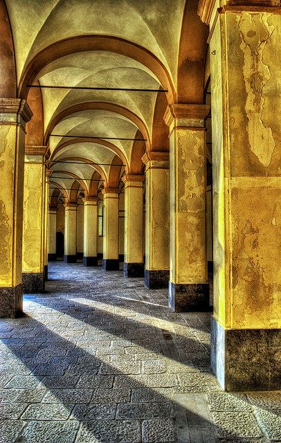
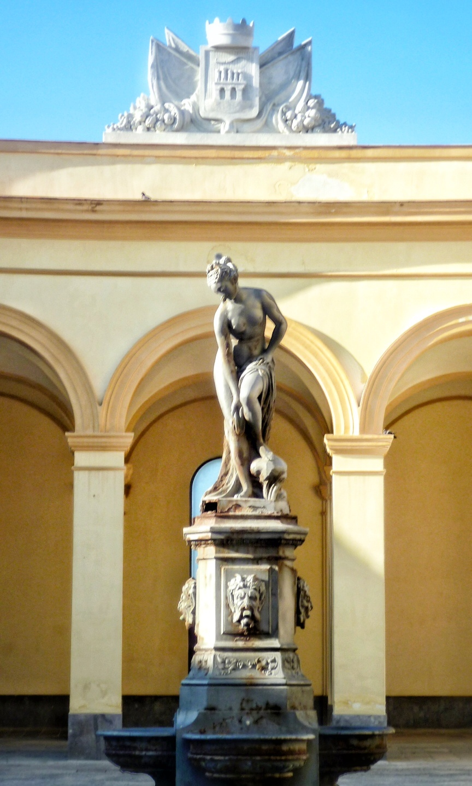

Piazza Mercato del Pesce
 ATMOSFERA: Qui il sole non è solo luce, è vita. L'ora migliore è l'alba, quando i primi raggi colpiscono le arcate e il mare di fronte è calmo. È il momento in cui i pescatori un tempo tornavano con il pescato fresco, rendendo la piazza un'esplosione di energia.
ATMOSFERA: Qui il sole non è solo luce, è vita. L'ora migliore è l'alba, quando i primi raggi colpiscono le arcate e il mare di fronte è calmo. È il momento in cui i pescatori un tempo tornavano con il pescato fresco, rendendo la piazza un'esplosione di energia.
 STORIA/ARTE: Il "tempio" qui è la statua di Venere Anadiomene al centro della fontana. Rappresenta il legame sacro di Trapani con il mito: la dea che sorge dalle acque protegge la piazza e i naviganti da millenni.
STORIA/ARTE: Il "tempio" qui è la statua di Venere Anadiomene al centro della fontana. Rappresenta il legame sacro di Trapani con il mito: la dea che sorge dalle acque protegge la piazza e i naviganti da millenni.
 CURIOSITÀ/SPETTACOLO: La maschera di questa piazza è quella del venditore ambulante. Le "vanniate" (le urla dei mercanti) erano vere e proprie performance teatrali spontanee per attirare i clienti sotto i portici.
CURIOSITÀ/SPETTACOLO: La maschera di questa piazza è quella del venditore ambulante. Le "vanniate" (le urla dei mercanti) erano vere e proprie performance teatrali spontanee per attirare i clienti sotto i portici.

L'Esedra che guarda all'Orizzonte
Se esiste un luogo che riassume l’anima di Trapani, "Città tra due mari", questo è certamente la Piazza del Mercato del Pesce. Situata all'estremità settentrionale del centro storico, lungo la passeggiata delle mura, questa piazza non è un quadrato chiuso, ma un’ampia curva, un’esedra che sembra voler accogliere il vento di maestrale e il rumore della risacca.
Un Capolavoro di Giovan Battista Talotti
Progettata nel 1874 (curiosamente lo stesso anno dell'inaugurazione del Politeama a Palermo) dall'ingegnere messinese Giovan Battista Talotti, la piazza fu concepita come un mercato moderno e igienico, ma senza rinunciare all'eleganza neoclassica. Il Porticato a Semicerchio: La caratteristica principale è il suo loggiato ad archi a tutto sesto, che crea un gioco di luci e ombre continuo. Ogni arco un tempo ospitava i banchi dei pescatori, proteggendoli dal sole cocente. La Pietra e il Bianco: L'uso dei materiali locali riflette la luce mediterranea, rendendo la piazza quasi abbagliante nelle ore centrali della giornata e rosata al tramonto, quando il sole cala verso le Isole Egadi.
Venere Anadiomene: La Dea che sorge dalle acque
Al centro della piazza, su una fontana circolare, svetta la statua di Venere Anadiomene (Venere che sorge dal mare). Non è una scelta casuale: Trapani, secondo la leggenda, nacque da una falce caduta a Cerere o a Saturno, ma è a Venere che la città è profondamente legata (si pensi al vicino Monte Erice). La dea sembra benedire i frutti del mare che per secoli sono stati scambiati sotto questi portici, ricordandoci che qui il commercio è sempre stato un rito sacro.
Dalle Reti dei Pescatori alla Movida Culturale
Per decenni, questa piazza è stata il ventre di Trapani. Immaginate le grida dei venditori ("le vanniate"), il luccichio delle squame dei tonni e delle sarde appena sbarcati dai pescherecci che attraccavano a pochi metri di distanza, e le mani nodose dei pescatori che riparavano le reti all'ombra delle arcate.
Un Rito Quotidiano
Fino agli anni '90, la piazza è stata il mercato ittico principale. Era il luogo dove l'aristocrazia dei palazzi vicini e il popolo dei quartieri "Casalicchio" e "Palazzo" si incontravano per comprare il pesce migliore. Era uno spazio di odori forti, di dialetto stretto e di vita autentica. Oggi il mercato si è spostato in una sede più moderna, ma lo spirito del luogo è rimasto incastrato tra le pietre dei pilastri.
Un Salotto sul Lungomare
Oggi, la Piazza del Mercato del Pesce ha cambiato pelle senza perdere il suo fascino. È diventata: Centro Culturale: Lo spazio sotto le arcate ospita spesso mostre d'arte, fiere dell'artigianato e concerti all'aperto. Porta del Centro Storico: È il punto di partenza (o di arrivo) ideale per chi percorre le antiche mura di tramontana, offrendo una vista privilegiata sulla costa frastagliata e sulle torri di avvistamento della città. Agorà della Movida: Con i suoi caffè e ristoranti che si affacciano sulla piazza, è diventata il luogo preferito per un aperitivo al tramonto, dove si può sorseggiare un vino locale sentendo lo spruzzo del mare sulla pelle.
